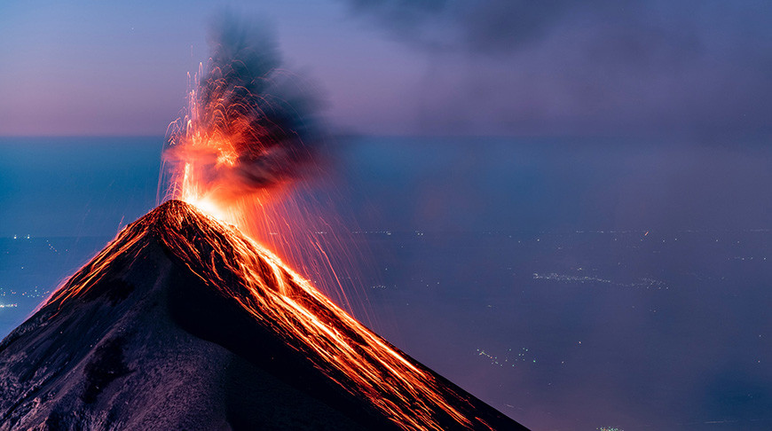
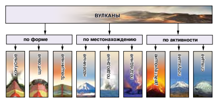
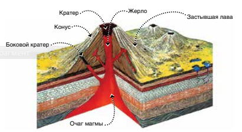

Вулкан
Вулкан
- возвышение над каналом или трещиной в земной коре, по которым поднимается и извергается на поверхность магма.

Гавайский вулкан Мауна-Лоа

Виды вулканов.

Строение вулкана.
На главную